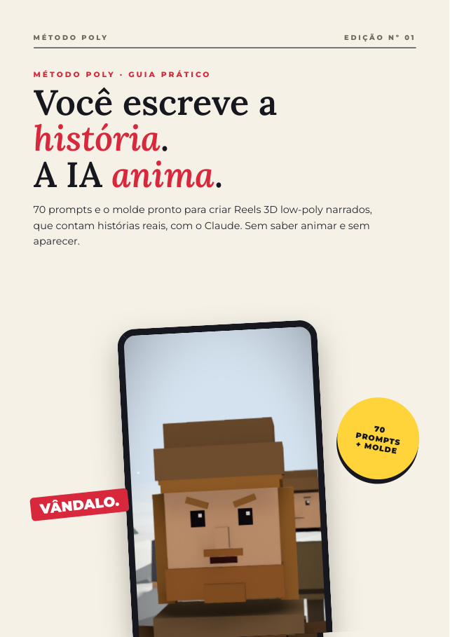
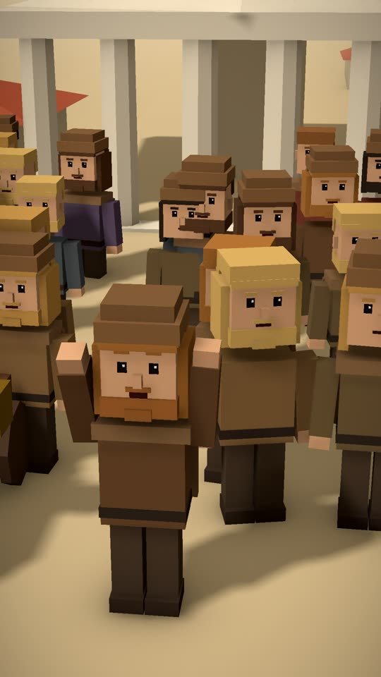
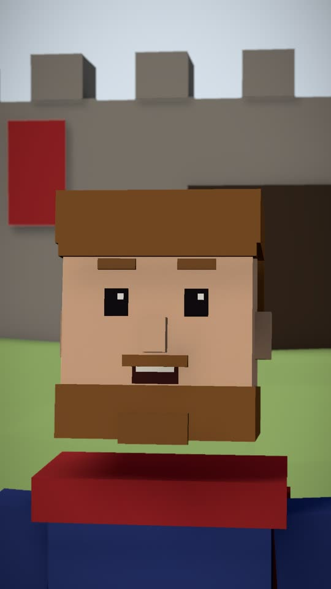
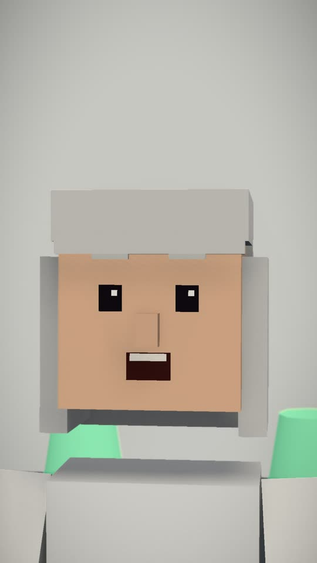
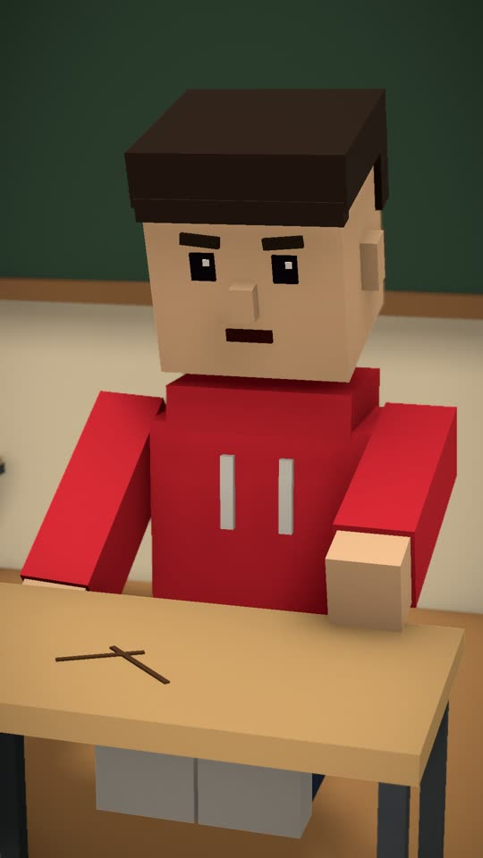

70 prompts e o molde pronto para criar Reels 3D low-poly narrados, que contam histórias reais, com o Claude. Sem saber animar, sem aparecer e sem programar.
Quero o Método Poly →
Personagens, cenário, câmera, voz, legenda, efeitos e música. Tudo gerado por código que o Claude escreveu. Eu só aprovei cada etapa.
"Você é um vândalo": gancho, alfinetada e a travessia do Reno com contador de km.
O vídeo de exemplo que vem no molde: telejornal, HUD e CTA no fim.
A IA não é ruim. É que, sem método, ela entrega uma lista de curiosidades soltas. E lista não prende ninguém até o fim. O meu primeiro roteiro foi assim:
Escolha uma página que viraliza no visual que você quer. O Claude tira o raio-X: arte, câmera, fontes, sons.
Tudo vira uma ficha que você reaproveita. Você copia o estilo, não o conteúdo.
Gancho, escalada com contador, virada e CTA. Fatos checados, com fonte.
O roteiro vira roteiro.json e um comando gera o vídeo pronto para postar.
Copie, troque o que está em amarelo e cole no Claude.




Você não começa do zero. Junto com o e-book vem o molde-poly.zip, o mesmo motor que eu uso, com instalador de um comando.
Requisitos: Windows ou Mac, 8 GB de RAM. A placa NVIDIA é opcional. A assinatura do Claude não está inclusa.
No capítulo 14 você vê cada uma com um exemplo de página de história. Resultados dependem do seu trabalho e da constância. Não prometemos ganhos.
roteiro.json prontos para o molde) por R$ 19,90. É opcional.Entrou, leu, testou e não gostou? Peça o reembolso pela Kiwify em até 7 dias e você recebe 100% do valor de volta. Sem pergunta.
Não. Você escreve a história e aprova. Quem escreve o código é o Claude, e o molde já vem pronto. Você vai usar o terminal para copiar e colar comandos, e o capítulo 9 mostra cada um.
Os prompts de roteiro, ficha de estilo e checagem de fatos funcionam no app grátis. O Claude Code, que instala e edita o molde com você, exige um plano pago da Anthropic, que não está incluso.
Windows ou Mac com 8 GB de RAM já roda. Com placa NVIDIA você ganha a voz clonada (Chatterbox). Sem ela, o molde usa uma voz neural grátis. O resto é igual.
Os prompts de texto funcionam em qualquer IA boa. O método de instalação e edição do molde foi feito e testado com o Claude Code.
Sim. O formato funciona para qualquer história com começo, meio e fim: história, ciência, corpo humano, origem das coisas. O capítulo 11 ensina a criar mundos e personagens novos.
Logo depois do pagamento, chega no seu e-mail o acesso à área de membros da Kiwify, com o PDF, os prompts em .txt e o molde-poly.zip.
Ninguém pode garantir isso. O método te dá vídeo bem feito e história que prende. Alcance depende de constância, nicho e das plataformas.